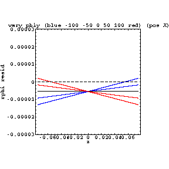
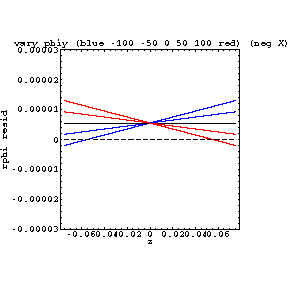
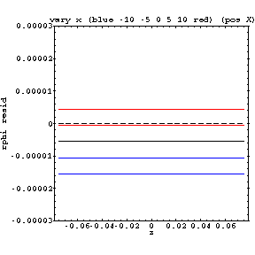
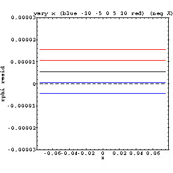

These two alignment parameters (phiy and delx) have an effect which is completely independent of the bowing effect.
|  |  |
| rphi res vs z, phiy is varied (pos X) (layer 4) | rphi res vs z, phiy is varied (neg X) (layer 4) |
|  |  |
| rphi res vs z, delx is varied (pos x) (layer 4) | rphi res vs z, delx is varied (neg x) (layer 4) |